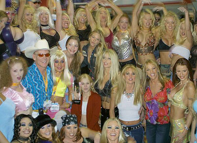
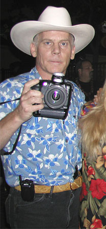
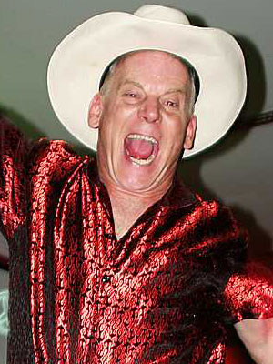

Max
Hardcore
"The easiest way to separate a girl from her clothing is with
a camera."
Where and how does one begin a critical analysis of Max Hardcore,
performer and pornographer extraordinaire?
The man's been called many things, from sadistic misogynist to vicious
child molester; from American original to industry visionary. Even outspoken
pro-porn groups wholly supportive of explicit sexual endeavors regularly
(but reluctantly) come forward to denounce Max's homespun pseudo-pedophilia
as a singularly abnormal and highly toxic cancer upon their private, economy-proof
clubhouse.
People who regard him as little more than a sociopathic, safari-suited
child rapist in a cowboy hat aren't being completely fair: from time to
time he wears colorful, Italian printed silk shirts and neatly pressed
beige slacks. Since
1990, he's produced and directed over 1500 sex scenes instrumental in
launching the careers of porn stars like Tiffany Minx, Anastasia Blue,
Davia Ardell, Lil' Sinderella, Lovette, and many others. This has nothing
to do with the size of his penis, which can be classified by anyone's
standards as exactly average.
In 1992, Zane Entertainment hired him to produce The Anal Adventures
of Max Hardcore, a series which which paved the way for a controversial
career, and not all masturbators were prepared for what they saw. Max
engaged in rough-edged, wild-eyed sessions with young, seemingly naive
industry newcomers. Hard pounding, dirty talking, anally fixated, impossibly
raw sex scenes often included teenie-boppers dressed as young waifs. The
primary "backstory" for his scenes involves finding a girl who
needs attention, telling her she's pretty enough to be a model, and assuring
her she'll make a lot of money and become famous if she appears in a video.
If Hitchcockian, Lynchian and Spielbergian are suitable
brand-jectives suggesting a specific range of easily identifiable cinematic
stylings, both the iconography and moniker of "Max Hardcore"
communicate similar sentiment among patrons of x-rated fare. For every
ten people who believe Max is a walking, talking, jerking, squirting incarnation
of everything hideously wrong with adult films, there are ten thousand
actively masturbating without apology to his brilliant fusion of colorful
imagery, intolerable cruelty, female degradation and aggressive, determined
brutality. He reduces the likes of vapid, vacuous Vivid Video girls
to the functional equivalent of discardable Chinese take-out menus dangling
from your front doorknob. His unique interpretation of what constitutes
"barely legal teen action" makes the complete works of Larry Flynt look like an Ikea catalog. If pornography is meant to evolve
and escape the inevitable onslaught of increasing mainstream acceptance,
Max Hardcore belongs at the frontlines of the industry, for all our sakes.
Formerly Max Steiner, previously Paul Little -- let's just label him one
of the most influential pornographers of all time and move on.
"I
do try to get the most out of my girls with braces and retainers, including
piss, puke, and throat fucking. I like silly young sluts with braces.
I know how to make them feel good. Most people criticize their looks with
braces, but I tell them how cute they are in them. I mean, have you ever
seen a 24 year old with braces?"
Max's female performers address him only as "Mister," and they're
really dolled up to the nines. Imbecilic bubblegum-flavored Wet 'n' Wild
lipstick smeared haphazardly across taut, shiny faces. High heels, tennis
socks, tightly-fitting baby clothes (not to be confused with crop-top
"baby tees" intended for adults) in flowery pastel palettes
of pink and yellow. Bobble-headed barrettes, scrunchies, ponytails 'n'
pigtails, braces, and retainers all adorn the ninety pound itty-bitty-titty
wirehanger frames of his intended prey. To say these girls look kinda
young is a dangerous understatement. They look about eleven. He finds
that lipstick brands marketed to teens stand up to tremendous punishment.
"Repeated reamings, piss and puke, and it's still there. Really amazing
stuff. I had tried the brush-on high price crap and that's just useless.
The eye shadow and cheek makeup I use is the low-cost stuff used by teens.
Those are the only ones who have the bright pinks and blues that really
pop on camera."
Indeed,
his girls are quickly soaked with vomit and drenched in urine. "If
you're going to do peeing," Max said during a panel interview with
Tera Patrick, "you have to be well-hydrated." Tears spill from
the cartoonish eyes of his female performers, eye makeup smears artfully
along protruding, youthful cheekbones, mingling with the unavoidable presence
of stringy mucus until their faces look like sloppy, painted-up rodeo
clowns. Forced smiles inevitably contort into grimacing, shaky half-sobs
as Max instructs them to look in the camera and address their mothers
in squeaky I've Been Molestered voices. H-how do you like me
n-now, mom? I'm a r-real live m-m-model! Are you proud of me? Max
answers one girl by grabbing her throat and yanking her ass off his dick.
He hoses her face down with piss, stuffing his dong down her throat so
hard she Ipecac-pukes buckets of clumpy beige liquid with spluttery fanfare
across his balls and down the front of her Apple Kitty tube-top. She blows
bubbles. He hands her a cigarette, slaps her face and tells her to get
with the program.
In
one outtake, Max's victim gets an golden arc of stinging urine straight
in the eye, where it sticks behind her contact lens. She lurches back,
wincing
in obvious discomfort. As she rises from the cement floor of the truckstop
restroom, cameras and lights are set aside.
"It's in my eye," she balks. "I'm wearing contacts."
Max is not amused with this delay. "Is it just foggy? Do you need
water? Is it life-threatening?"
"No," she replies, annoyed.
"Then pull your panties down. And listen, let's get one thing straight.
There's only one guy who calls cut on the set, and that's me."
"Try being a little easy, please," she implores.
"I am being easy," Max barks, letting loose with a angry
torrent of urine. He deliberates splashes it up and down her face, pulling
her hair back with his free hand. She purses her smeary lips together,
angry and humiliated.
Let's
all step into the Wayback machine for just a moment, to the 1980s, during
which time the majority of adult features were available on video "tapes".
Before Max, not many cassettes boasted anal scenes, let alone "all-anal"
extravaganzas. Anal sex filmed during this miserable era were consistently
presented in the worst way anyone could ever imagine, with directors
instructing performers to convey a sense of dignity, class, and cleanliness
to the proceedings. Onscreen, this was chiefly telegraphed to viewers
by way of performers slowing down and "wooing" the taboo during
overextended, pedantic mood sequences: wordless, soft-focus erotic montages
complimented by tasteful candlelight and satin sheets, as if a stupid
whore's puckered butthole was the Taj Mahal. Rest assured, Max put
a stop to that nonsense toot sweet, leveraging the full power of
anal sex as God himself originally intended. In Mr. Hardcore's arena,
anal sex became less of a plot point and more of a full-throttle narrative
engine designed to humiliate and degrade multiple female performers at
once, and as much as humanly possible. Max believed sex was better
when accompanied by its own natural sounds rather than being drowned out
by swelling music.
In
this post-Max world, even Vivid videos are compelled to feature
at least one anal scene. Anything less would be an insult to the home
viewer. Today,
all-anal videos and DVDs dominate the market, constituting at least half
the releases consistently ranked among the best-selling adult films charted
by Adult Video News. If Max Hardcore had footage of Private Jessica Lynch
getting anally gangbanged by twelve Iraqi soldiers, he wouldn't pull a
Flynt and bury it - he'd name it Jessica Lynch's Privates, and
make it available on the Apple Music Store for ninety-nine cents.
In Max Hardcore videos, a girl's rear end is likely to be dilated to
an outrageously uncomfortable circumference, usually with a clear
plastic gynocological speculum equipped with a temperature gauge and buzzing
electric lights. Awkward, biological attributes like the pokey-poke tip
of a tiny turd or never-before-seen red, raw tubular tunnels are brilliantly
illuminated for all to see -- yes, let's just come right out and say it
-- deep within her cavernous sphincter. Sorry if you can't jerk
off to that, but more often than not Max's films are less about masturbation
and more about showing the audience something they don't exactly see every
day.
There is only one male performer in Max Hardcore videos, and that's Max
Hardcore himself. He brings to the table no modest lexicon of terms of
endearment for his female victims. He refers to them (somewhat alphabetically)
as cock sockets, cum gargles, fuck holes, and jizz guzzlers. During extended
sequences, he concatenates enumerated descriptors into a battery of demeaning
expletive chains, a-la "piss-soaked, cum-splattered, soil-soaked,
puke-stained, slime-covered, ass-blasted, fender-flapping, sponge-stupid
shitfucks".
On
Sofia Ferrari: "A total fuck pig that puked on my cock several
times and kept on going."
On Kitty Yung: "In the early scenes I could have talked this
whore into sucking my dog's dick. But she learned the fateful word 'no'
later on."
On J.R. Carrington: "Total fuck slut who would do anything
for money."
On Autumn Day: "Anything, and I mean anything was the way
I had this slut processed. Not a typical porn girl. Just a total slut."
On Tiffany Mynx: "At the beginning, anything would be possible.
But she got to be an uppity fat fuck shortly afterwards."
On China Lee: "Any thing is possible with this whore, including
licking donkey balls."
On Channone: "The only problem I had with this whore is she
spoke very little English. Nowadays I just would just start pissing down
her throat and I'm sure she would take it."
On Alexandra Silk: "She would pretty much do whatever I wanted
at the time, including fisting. But then let a little success go to her
head and wouldn't speak to me for years."
On Penelope: "She guzzles piss with the best of them and
I even taught her how to fist herself."
Warning signs adorn his southern California studio. There will be no drinking
on the set. No drugs. Nobody under age eighteen is allowed anywhere near
the property. And yet, there are moments in Max Hardcore vignettes where
you absolutely, positively can't believe what he's convinced someone to
do while stone cold sober. Does he hate women? He claims not to, citing
a wonderful childhood and a loving home.
Repeated
insults and name calling, choke-fucking, and ass-to-mouth stuffing are
part and parcel of Max's ongoing legacy. But practices like projectile
anal squirting -- his words, not ours -- are not always enough for
his diehard fans, who regularly contribute constructive feedback on his
private, members-only message boards about what they'd like to see.
"Can you do some milkshake enemas?" one user pleads. "Pour
it into a whore's asshole, then plunge your cock in and have it spill
out down the whore's thighs and cunt (nice and messy), then get another
slut to suck and lick the rest of the milkshake out of the slut's asspipe
and do some spit swapping between the two fucktoys. Hope these suggestions
are of some use."
Thanks
for the suggestions, Max replies. Be looking for them -- in
the movies!
Pre-Max, videos had about five sex scenes apiece, and rarely deviated
from this format. But. Dr. Hardcore, Ph.D. observed that renters would
more often than not secure two or three videos a night. That's a complete
evening of masturbation, with a little leftover for the next morning
before work. He believed he could get away with fewer scenes, providing
he showed the customer what he (or she!) wanted to see. His modus operandi?
A scant three scenes per tape. Each rented and sold beautifully.
Producers followed suit, stretching their existing materials wider than
a gaping tailpipe, and increased the number of available titles on the
market. Talk about a win-win for the consumer.
"Seven years ago a scene consisted of seven minutes, a couple of
positions and the pop shot. Nowadays, the scenes are longer and people
expect more intense work. I'm compared to Rocco Siffredi. Intensity is
what the public demands of us."
Max
helped pioneer an ostensibly gonzo style of adult filmmaking. "It's
pretty easy to get a slut to spread solo for the camera," he muses.
"And quite a different matter to get her to take it up the ass and
puke up piss."
General Motors owns DirectTV, which distributes over forty million
streams of porn into American homes every month. AT&T Broadband
and Comcast Cable are the currently biggest American companies accommodating
consumerbators with The Hot Network, Adult Pay-Per-View and similarly
themed services. AT&T and GM rake in approximately 80% of all
porn dollars spent by consumers -- but you won't read about it in their
annual stockholder reports, which contain no mention of adult material,
nor how much porn contributes to their bottom lines.
While these businesses happily authorize the distribution of pornographic
content (offering independent producers like Max a protective layer of
legitimacy) it was inevitable that child pornography charges would eventually be leveled against him by a Los Angeles District Attorney,
specifically with respect to Max Extreme 4: Extreme Team,
Volumes #18, #19, #21 and yes, #24.
Max's attorney
Jeffrey Douglas: "The thing which offended the police so much was
the relatively subtle underage sex fantasy. No one is declared to be underage
and it is a relatively minor theme, but that just got the LAPD incensed.
So that was the thrust of the prosecution's case: a film with the implication
that there are underage characters; that's what they want to be determined
to be obscene." Similar obscenity charges were filed against Adam Glasser (for
Seymour Butts' Tampa Tushy Fest) and Jeff Seward (for American
Bukakke #11), but both cases were plea-bargained down to public nuisances.
Max's case started in 1998 and ended in 2002, with a hung jury and a
mistrial. The case went nowhere after the U.S. Supreme Court voided sections
of the Child Pornography Prevention Act meant to criminalize adults in
sexually explicit conduct with those who appeared to be under the age
of eighteen. That left only the Distribution of Obscenity charges, which resulted
in a deadlock.
Specifically,
the Supreme Court ruled that in order for material to be considered child
pornography, it has to have children in it. In a 6-3 decision,
the high court struck down Sections 2256(8)(B) and 2256(8)(D) of the Child
Pornography Prevention Act which previously made it a crime punishable
by a minimum of five years in federal prison to include someone who "appears
to be" a minor in a sexually-oriented work, or if such work were
advertised so as to "convey the impression" that there were
minors therein involved in sexual situations.
"We were extremely disappointed with this decision," said Jay
Sekulow, Chief Counsel of Pat Robertson's American Center for Law and
Justice. But Max was elated. "We're going to continue to produce
our movies using girls that are young, fresh and excited. It's never my
intention to lead a viewer to believe that a girl is underage. What we try
to do is to portray a young lady's innocence to the experience of sex
for the first time. My experience has been that a lot of the girls we
work with enjoy role playing and acting as if it's the first time for
them."
Max Hardcore's name evokes rounds of applause by the porn high-rollers
at industry conventions. His fans have rewarded him with a generous income
which perches him in a lofty four-story chateau high atop the Pasadena
hills, where he continues to crank out controversial, iconoclastic videos
meant to stretch the limits of acceptable behavior and obliterate the
concept of shame.
"I'm gonna go to jail if I have to, but I make movies because
I must."
|